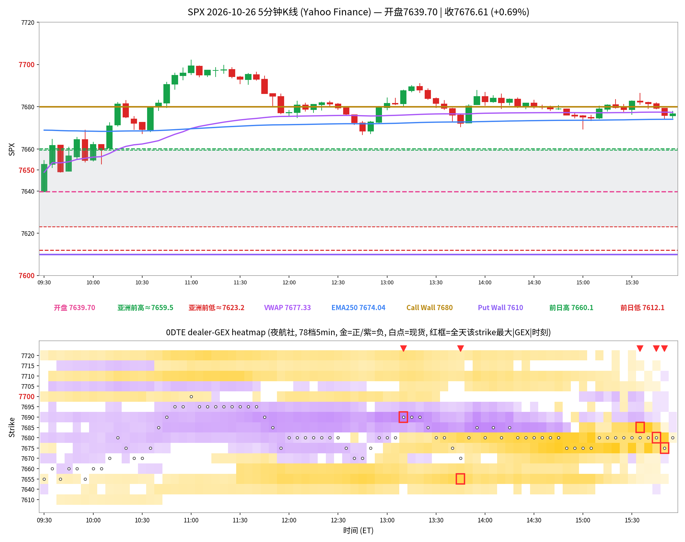

SPX 日内报告
2026年10月26日 · 周一 · 日内报告
早盘分析
（Junk-man 早盘简报未抓取到，留空待补）
（待补充 Junk-man 当日 #junkman-analysis 原文）
5 分钟 K 线 × 0DTE heatmap
0DTE，夜航社 78 档 5 分钟快照；白点为每档现货位置

heatmap解读（0DTE，夜航社 78 档 5 分钟快照）
- 金色带在 7680(+0M)
- 紫色带在 7685(-0M) / 7690(-0M)
- 白点轨迹: 开 7639.7→高 7702.13→低 7639.7→收 7676.61（0.69%）；收盘在 call wall 7680 下方，put wall 7610 上方
- 尾盘节点变化: 前三节点迁移 [7655, 7675, 7680]→[7680, 7685, 7690]；7680 减弱 -100%（5141M→0M）；7690 减弱 -100%（528M→-0M）
全天最大节点 TOP5
亮度口径：p99 截断；红框 = 全天该 strike 最大 |GEX| 时刻。
资金流（0DTE SPXW，全天12笔；premium≥$20万｜size≥50｜0DTE｜side=B/M/A）
| 时间 | Strike | C/P | DTE | Fill | Bid/Ask | Side | Size | Prem | Vol | OI |
|---|---|---|---|---|---|---|---|---|---|---|
| 10:16:57 | 7700.0 | CALL | 0 | $4.55 | 4.50 / 4.70 | BID | 500 | $0.227M | 30453 | 3392 |
| 10:17:14 | 7660.0 | CALL | 0 | $24.20 | 24.10 / 24.20 | ASK | 88 | $0.213M | 16760 | 2453 |
| 10:38:37 | 7700.0 | CALL | 0 | $3.70 | 3.60 / 3.70 | ASK | 1000 | $0.370M | 43631 | 3392 |
| 10:40:38 | 7705.0 | CALL | 0 | $3.00 | 3.00 / 3.10 | BID | 1000 | $0.300M | 22955 | 610 |
| 11:05:34 | 7720.0 | CALL | 0 | $3.30 | 3.30 / 3.40 | BID | 1000 | $0.330M | 25071 | 1293 |
| 11:40:44 | 7705.0 | PUT | 0 | $14.90 | 14.90 / 15.00 | BID | 160 | $0.238M | 3870 | 276 |
| 11:44:38 | 7705.0 | PUT | 0 | $16.45 | 16.40 / 16.80 | BID | 122 | $0.201M | 4094 | 276 |
| 11:49:37 | 7690.0 | PUT | 0 | $9.63 | 9.60 / 9.80 | BID | 233 | $0.224M | 21318 | 532 |
| 11:59:36 | 7695.0 | PUT | 0 | $19.80 | 19.70 / 19.80 | ASK | 129 | $0.255M | 19172 | 377 |
| 13:02:02 | 7650.0 | CALL | 0 | $31.56 | 30.90 / 31.50 | ASK | 75 | $0.237M | 13174 | 1698 |
| 13:48:08 | 7670.0 | PUT | 0 | $5.62 | 5.40 / 5.70 | ASK | 440 | $0.247M | 84220 | 874 |
| 14:22:04 | 7685.0 | PUT | 0 | $6.40 | 6.40 / 6.50 | ASK | 390 | $0.250M | 58696 | 770 |
主动资金0.109（中性）：主动买入 $3.64M，主动卖出 $2.92M，mid $0.00M（不计入主动买卖）。
分析总结
价格行为 × 0DTE GEX 结构复盘
①开盘 7639.7，相对 call wall 7680 位置：墙下；put wall 7610。
②白点轨迹: 开 7639.7→高 7702.13→低 7639.7→收 7676.61（0.69%）；收盘在 call wall 7680 下方，put wall 7610 上方
③尾盘节点变化: 前三节点迁移 [7655, 7675, 7680]→[7680, 7685, 7690]；7680 减弱 -100%（5141M→0M）；7690 减弱 -100%（528M→-0M）
④flow 印证：中性（bull 3.64M / bear 2.92M）；最大簇 7675C 0.75M（ATM，spot≈7688.4；ask 0.21M / bid 0.54M / mid 0.0M）。
⑤收盘 7676.61（0.69%），VWAP 7677.33，EMA250 7674.04；非事件日
heatmap 亮度=平方根连续渐变（p99 裁剪）；K线=Yahoo ^GSPC 5分钟＋ES成交量动态basis换算VWAP；heatmap=夜航社 dealer-GEX 5分钟快照。
收盘后的静态快照；页面不在打开时更新行情。